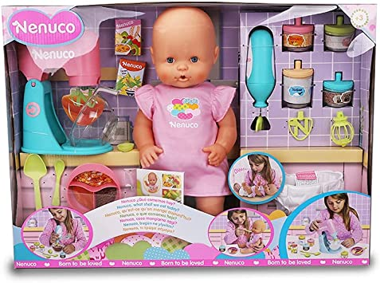

44.99 $
Es una muñeca Nenuco grande de 42 centímetros de cuerpo duro y con un bonito conjunto de ropa rosa y un pañal de tela, intercambiables por otras piezas de Nenuco del mismo tamaño
El muñeco puede comer y beber las papillas que se cocinan con este divertido set, se pueden preparar distintos platos de comida
Incluye muchos accesorios para jugar a las cocinitas, como dos juguetes electrónicos: una batidora de repostería y una cuchara que gira